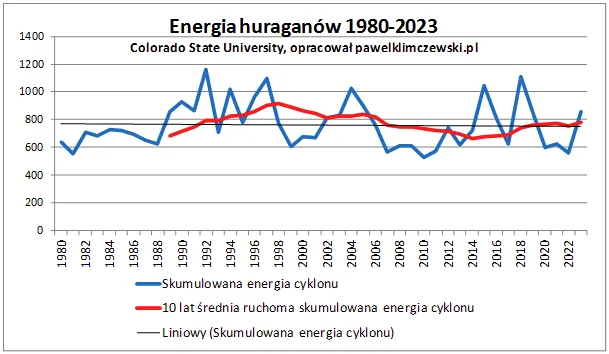
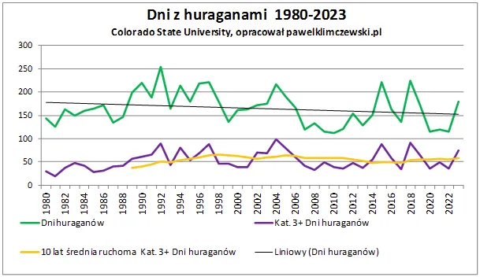

Kłamać trzeba umieć
Jednym z przejawów "pożaru planety" ma być wzrost niszczycielskiej mocy huraganów. Trochę rozczarowany trajektorią huraganu Debby, wraca on z oceanu na kontynent i osłabnie szybko do zwykłego niżu, poszperałem i znalazłem archiwum huraganów z ostatniego półwiecza. W 5 minut wystarczy zrobić dwa wykresy, aby zobaczyć, że planeta stygnie... Mamy już tego wiele symptomów, o czym pisałem w wielu felietonach. Nowe wykresy zgodnie potwierdzają, że mieliśmy przyrost energii termicznej w ziemskim ekosystemie, ale od początku lat 90 tych XX wieku trend ten się zmienił. Paradoksalnie w szczycie tzw. "emisji".


Huragany są zaworem bezpieczeństwa bilansu termicznego planety i w obecnym sezonie mamy ich malutko, nawet na wschodnim Pacyfiku, obok Meksyku, po kilku dniach gasną, gdy dochodzą do zimnych prądów docierających tam aż z Antarktydy.
Karbofrustraci nie przyjmą tych informacji, ponieważ oni są emocjonalnie związany ze swa wiarą, wśród nich trudno znaleźć człowieka racjonalnego, to jest generacja ludzi, którzy stracili kontakt z religią swych rodziców i dziadków i instynktownie szukają obiektu kultu, bo człowiek ma ducha, który nas ciągnie do ducha, w nowej religii to matka ziemia, traktowana osobowo, co jest szaleństwem.
Paweł Klimczewski